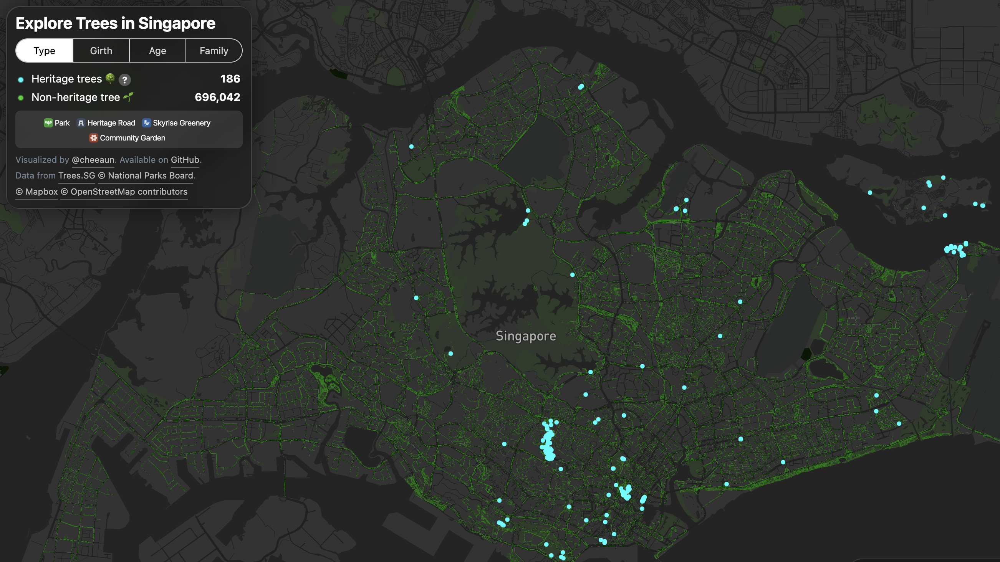
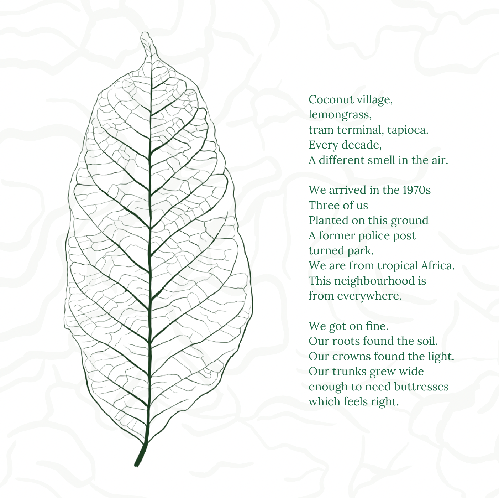
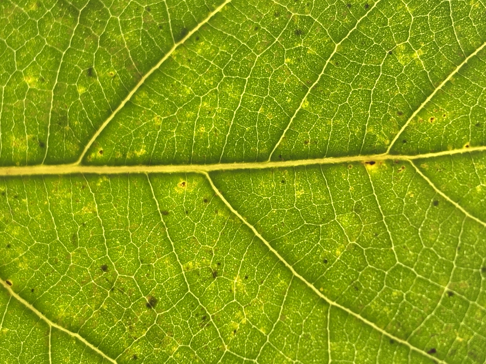
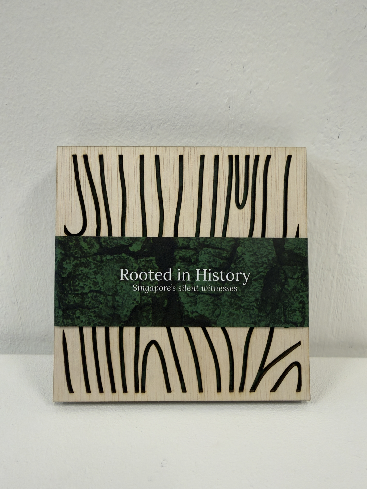

Heritage Trees
Singapore’s silent witnesses — a conceptual project: boxed publication, poems, photography, film and an audio map.
Cities tell their own history through buildings, street names and museums that decide what gets kept and what gets cleared. But some witnesses were never consulted. Singapore’s Heritage Trees have stood in place while everything around them changed hands, names and shape — many are older than the policies that now protect them. They aren’t symbols: they are living organisms, sometimes centuries old, with no way to speak. Rooted in History is an attempt to ask.
Giving a tree a voice can go wrong two ways. Too scientific, and it becomes a plaque. Too documentary, and it becomes a museum label — the exact register the project argues against. So the voice is an imagined interior: eight trees, eight first-person poems, moving from the ground each grew from to the city it watches now. One problem remained — a poem can only describe the past, and the present had to be experienced, which sends the visitor outside, to the tree itself.
Behind it: site visits to all eight trees across Singapore, archival research into how each neighbourhood transformed around them, and original macro photography of leaves — vein structures shot close enough to read like maps or aerial terrain — which became the visual language of the whole system.







